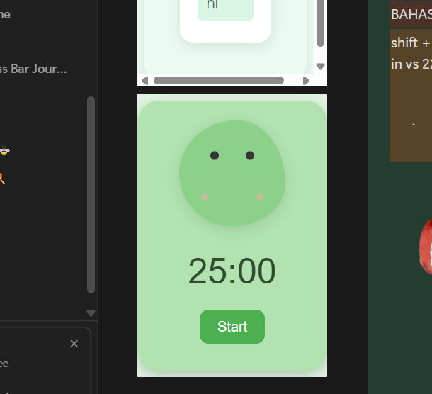
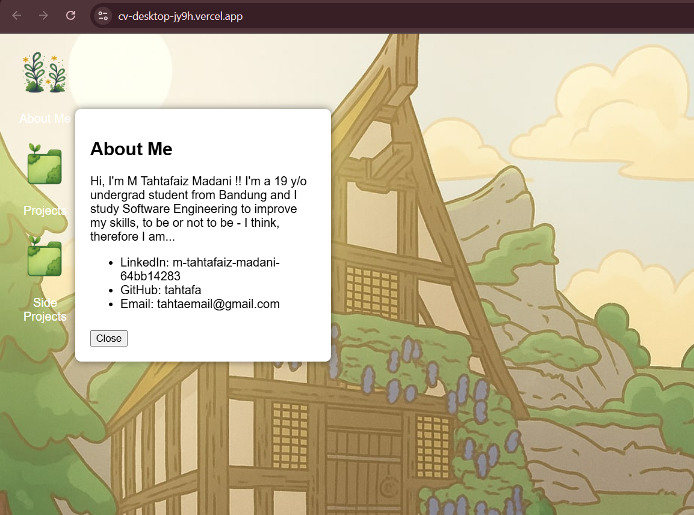

Hi, I'm M Tahtafaiz Madani !! I'm a 19 y/o undergraduate student from Bandung. I study Software Engineering to improve my skills, my programming languages skills includes mostly in Go, C#, Java, MySQL, and C++. To be or not to be - I think, therefore I am...
LinkedIn: m-tahtafaiz-madani-64bb14283
GitHub: tahtafa
Email: tahtaemail@gmail.com
Side Projects
— A matcha-themed animated timer.
— A desktop-style CV built with HTML, CSS, JS.
Pomodoro Timer

A matcha-themed animated Pomodoro timer built with vanilla HTML/CSS/JS.
🌐 Visit Live Project
CV Web App

A desktop-style CV website inspired by vintage OS themes.
🌐 Visit Live Project